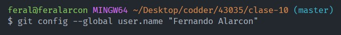

git config --global user.name "el nombre" - Esto es para configurar el nombre de usuario , el nombre que mostrara los commits efectuados por uno.
Git - Guia basica para empezar a jugar con sus comandos
Configuracion de git
git config --global user.email tuemail@gmail.com - Esto es para configurar el email de usuario , el email que mostrara los commits efectuados por uno.
Iniciando git
git init - Inicia un repositorio de git en nuestro proyecto, esto SE HACE 1 SOLA VEZ POR PROYECTO.
git add . - El . es para guardar todos los archivos que fueron modificados/creados
git commit -m "el mensaje del commit" - Mientras mas descriptivo sea el commit mejor es para nosotros.
git status - Para verificar el estatus de nuestro proyecto, si hay algo para guardar y commitear.
git log - Muestra el historial de los commits efectuados, con su id, nombre , apellido , email y titulo de commit.
Trabajando con ramas
git branch - Visualizamos las ramas existentes.
git branch nombrederama - Creamos una nueva rama.
git checkout nombrederama - Nos movemos hacia esa rama.
git merge nombrederama - Nos movemos hacia la rama master, pero antes debemos hacer un commit de los cambios efectuados en esa rama, ya que de lo contrario no surtira efecto.
Trabajando con github
git remote add origin url-de-repositorio - Conecta nuestro repo local al repo online de github
git remote -v - Verifica si nuestro repo local esta conectado al repo de github
git push -u origin nombrederama - Empuja nuestros cambios ya commiteados de nuestro repo local al repo de github